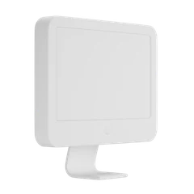
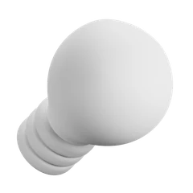
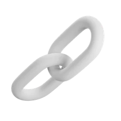

ไอเดียของเรา
LANTERN เป็นโคมไฟที่ฟังเสียงเราได้ แค่เรียกชื่อ “ตี๋” แล้วต่อด้วย “เปิด” หรือ “ปิด” ระบบจะสั่งรีเลย์ให้เอง หลอดไฟบ้านก็ติดหรือดับ ไม่ต้องลุกไปกดสวิตช์
ปัญหาที่เจอ
นอนอยู่บนเตียงแล้วต้องลุกไปปิดไฟ มือไม่ว่างตอนถือของ หรือคนที่เดินไปกดสวิตช์ได้ลำบาก เช่น ผู้สูงอายุ
สิ่งที่เราทำ
หลังบ้านแปลงเสียงเป็นข้อความ ถ้าได้ยินคำปลุก “ตี๋” ตามด้วยคำสั่ง จะส่งต่อให้ Arduino สั่งรีเลย์ต่อหรือตัดไฟ 220V ที่ไปหลอด

การทำงาน
ระบบมีสองฝั่ง ฝั่งสั่งงาน (ไมค์ หลังบ้าน Arduino) ใช้ไฟต่ำ ส่วนฝั่งไฟบ้าน 220V วิ่งผ่านรีเลย์ไปถึงหลอด สองฝั่งเจอกันที่รีเลย์ ซึ่งแยกไฟสองฝั่งออกจากกันด้วยขดลวดข้างใน
- ผู้ใช้พูดคำปลุก “ตี๋” แล้วต่อด้วย “เปิด” หรือ “ปิด”
- ไมโครโฟนส่งเสียงให้หลังบ้าน ซึ่งแปลงเสียงเป็นข้อความด้วย Speech-to-Text
- หลังบ้านเช็กว่ามีคำว่า “ตี๋” ไหม ถ้ามี ดูคำถัดไปว่าเปิดหรือปิด แล้วส่งคำสั่งให้ Arduino ทางสาย USB ถ้าไม่มีคำปลุกจะไม่ทำอะไร
- Arduino UNO R4 ส่ง HIGH (เปิด) หรือ LOW (ปิด) ไปที่ขา IN ของรีเลย์
- รีเลย์ต่อวงจร 220V หลอดไฟบ้านติด หรือตัดวงจร หลอดดับ
อุปกรณ์ที่ใช้
-

Arduino UNO R4
รับคำสั่งจากหลังบ้านแล้วสั่งรีเลย์
× 1 -
ไมโครโฟน
รับเสียงพูดของผู้ใช้
× 1 -

คอมพิวเตอร์ (หลังบ้าน)
แปลงเสียงเป็นข้อความ เช็กคำปลุก แล้วส่งคำสั่งให้ Arduino
× 1 -

โมดูลรีเลย์ 5V
สวิตช์ที่ให้ Arduino เปิด-ปิดไฟ 220V ได้
× 1 -

หลอดไฟบ้าน + ขั้ว E27
โหลดที่เราควบคุม
× 1 -

สายไฟ VAF + ปลั๊กตัวผู้
เดินไฟ 220V จากเต้ารับ
× 1 ชุด -

สายจัมเปอร์ / บอร์ดทดลอง
ต่อรีเลย์กับ Arduino
× 1 ชุด
ทีมของเรา
-
 อั้ม
อั้ม -
จิร
-
ชื่อ นามสกุล
-
ชื่อ นามสกุล
-
ชื่อ นามสกุล